runs / 2026-10-19 / 075627-669000-baseline-80903dee
五重塔ボクセル庭園の単一HTMLを22.5分・42コールで完了
qwen3.8-flash-next-unsloth-ud-q4_k_xl（thinking high）がボクセルの五重塔庭園シーン依頼を受け、1,351.0秒・主呼び出し42回で pagoda-garden.html（42,533バイト）を生成し、completed（exit_code 0）で終えた。冒頭の計画と初稿書きで全体の4割超を費やし、残り時間で read/edit とブラウザ eval による検証ループを回した。最終報告では http:// と file:// の両方でコンソールエラーゼロ、4時間帯のスクリーンショット確認が主張されている。
成果物
work/pagoda-garden.html（42,533 バイト）をそのまま同梱している。重いシーンもあるため、必要なときだけ起動する。
pagoda-garden.html
42 KB · 起動するまで読み込まない
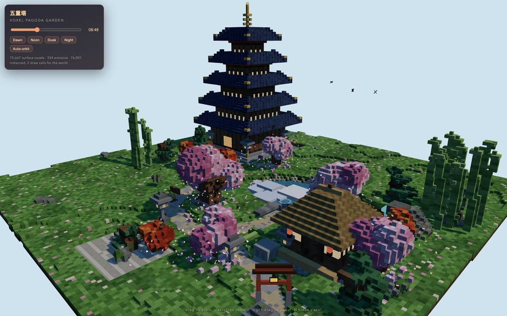
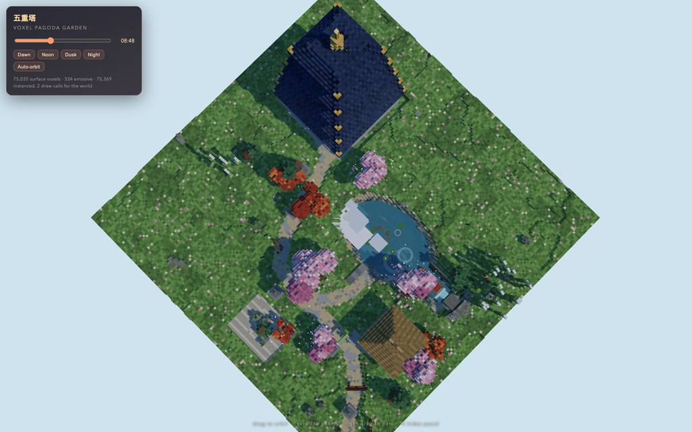
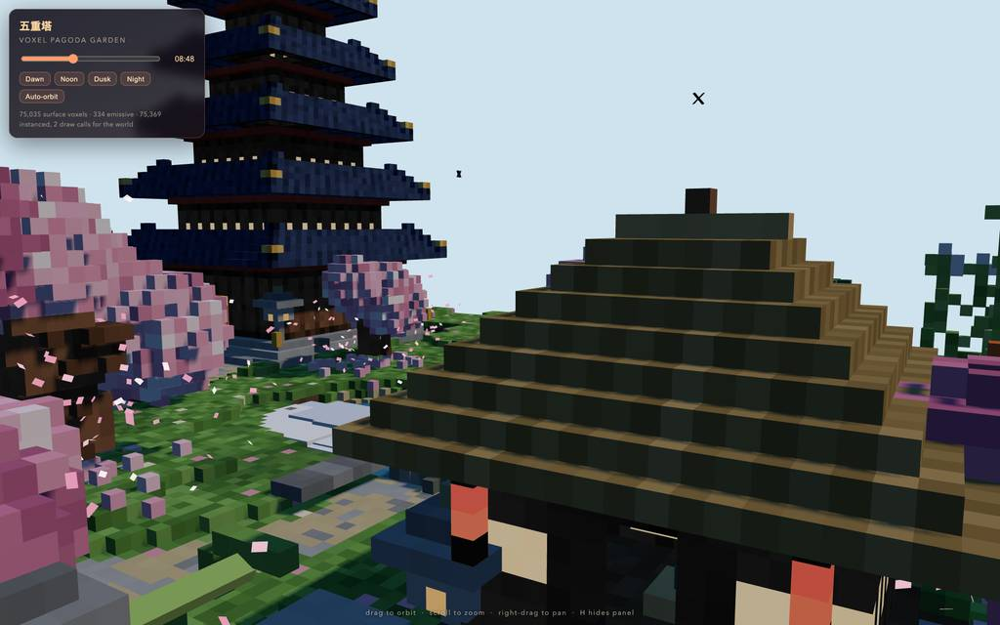
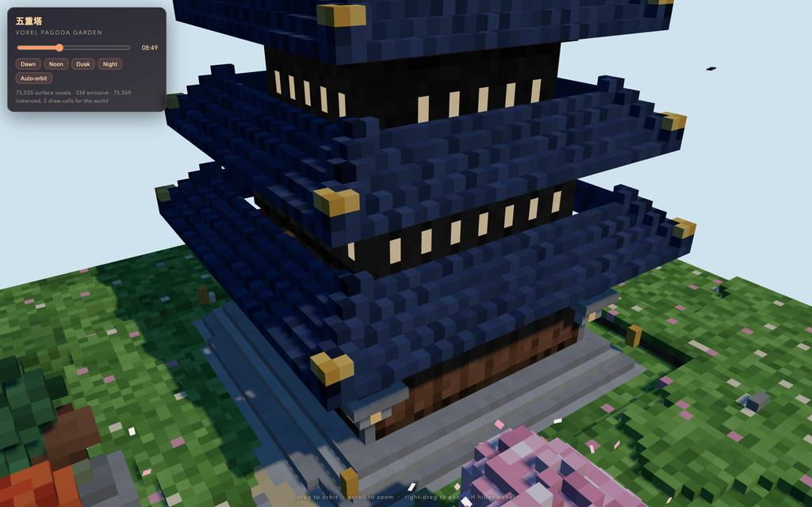
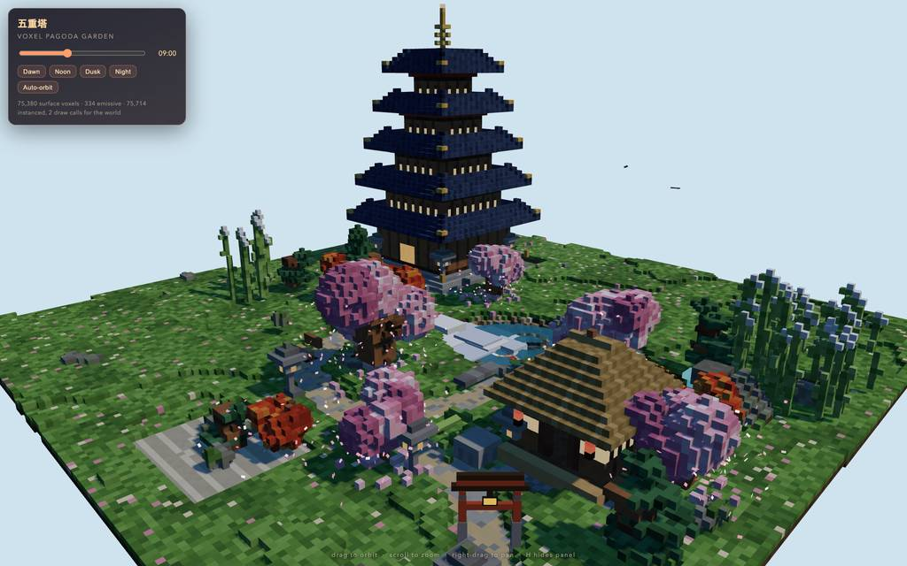
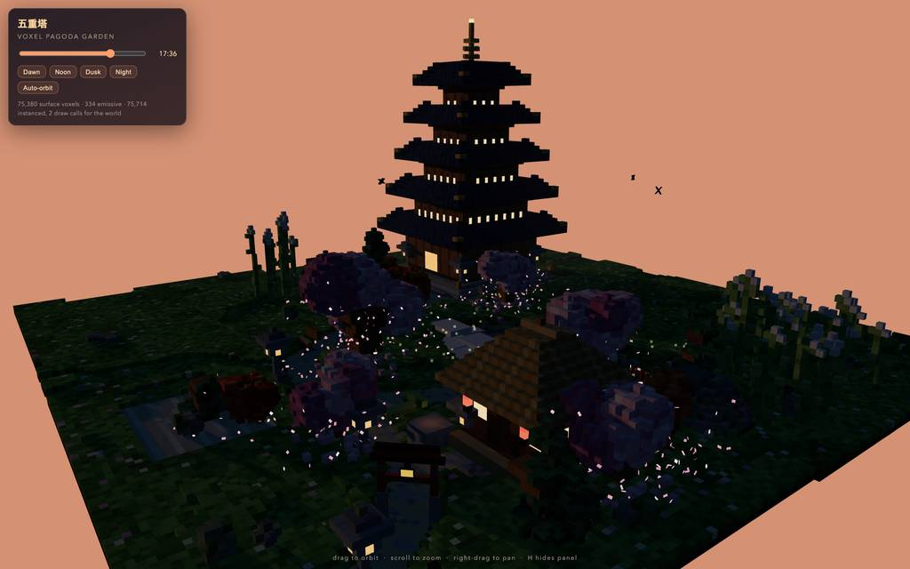
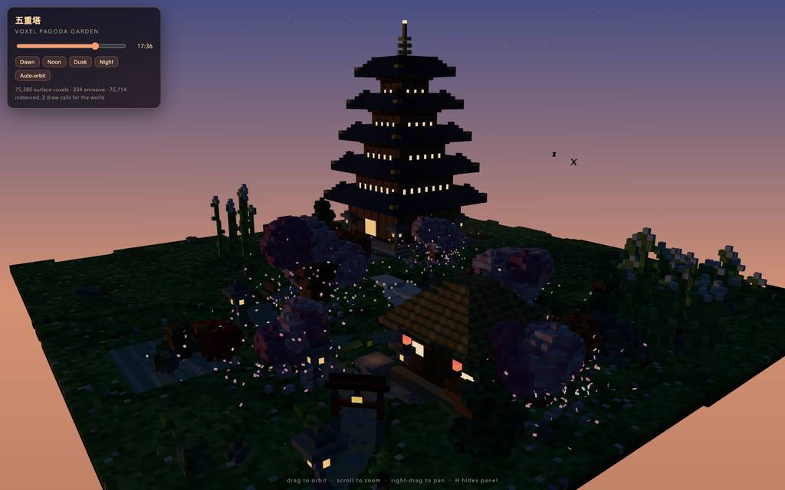
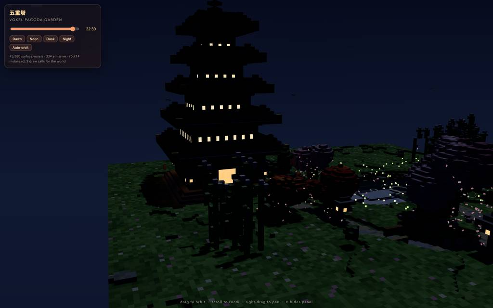
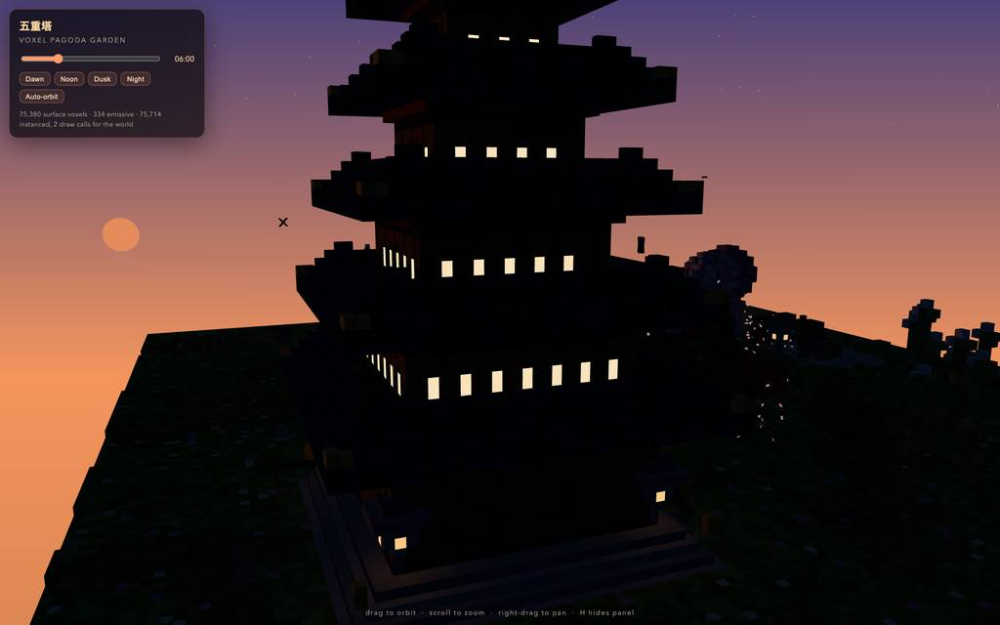
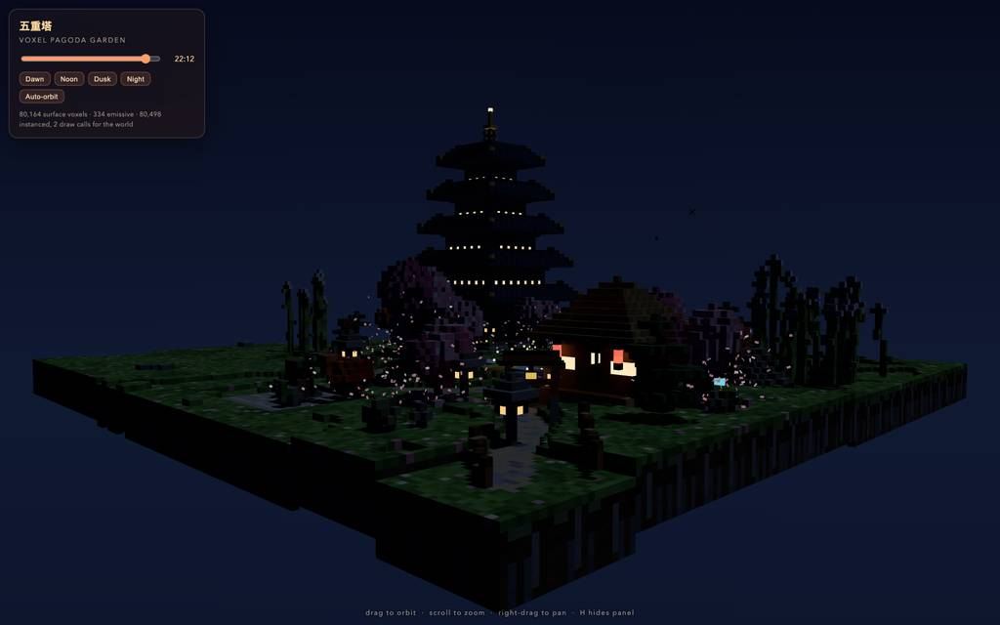
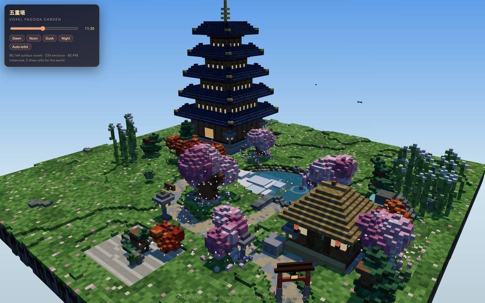
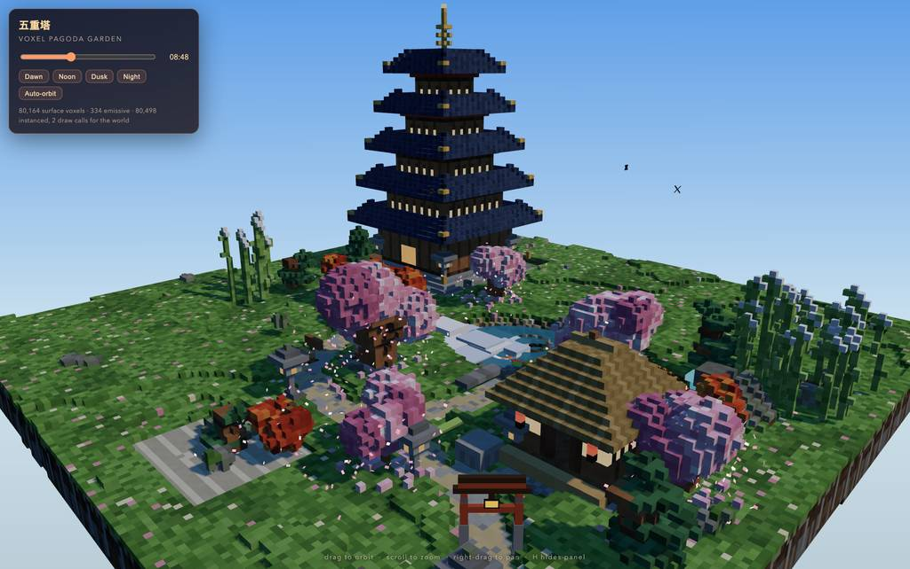
全 13 枚から等間隔に 12 枚を選んでいる。logs/events.jsonl の画像ブロックを内容ハッシュで重複排除して時系列に並べた、制作中の検証用スクリーンショット。最終版とは限らない。
成果物の構成
| 要素 | 内容 |
|---|---|
| 成果物 | 単一 HTML ファイル pagoda-garden.html（42,533 バイト）。最終報告では外部依存を Three.js r161 の CDN importmap のみと記述。 |
| 描画アーキテクチャ | シード付き RNG（mulberry32）で再現性を担保し、静的ジオメトリを InstancedMesh 2 個にベイク。約 80,500 ボクセル、静的ワールド 2 ドローコールと最終報告が主張。 |
| 五重塔 | 36×36 石段基壇、5 層の真壁と欄干帯、夜間発光の障子窓、反り屋根の九輪付き宝珠塔頂。 |
| 水回り | 5 匹の錦鯉と蓮・波紋環を備えた池に、赤い拱橋と滝から注ぐ流れ。最終報告の記述。 |
| 植栽 | 手毬桜、紅葉、雲形に仕立てた松、39 本の竹藪、760 インスタンスの花弁パーティクルと落ち葉覆い。 |
| 構造物・小道具 | 明神型鳥居、茅葺茶屋（ engawa・提灯・床の間）、灯籠の瞬き点光源、蹲踞の鹿威し、ベンチ、柵、雲、鳥の群れ、800 の星、夜萤と最終報告が列挙。 |
| 制御 | 時間帯スライダーと 4 プリセットが勾配空・日月・霧・水色・照明強度を連動、OrbitControls と自動軌道、H でパネル非表示。 |
| 検証の主張 | headless Chromium で http:// と file:// の双方でコンソールエラーゼロ、暁・正午・黄昏・夜の 4 時間帯スクリーンショットで確認済みと最終報告に記載。 |
モデルの最終メッセージから読み取った内容。コードの確認はしていない。
タイムライン
42 回の API 呼び出しを時間順に並べた。上段の帯の幅が各呼び出しの所要時間で、帯の間の空白がツールの実行時間。下段はその時点のコンテキスト長。
最も長い 2 回の生成（#3 297 秒・#1 237 秒）で 534.2 秒、壁時計の 39.6%。出力トークンの上位 4 回（#3・#1・#4・#8）で全体の 63.4%（41,083 / 64,765）。推論以外（ツール実行など）は約 62 秒（5%）。
フェーズ別の内訳
| フェーズ | 経過 | 所要 | 全体に占める割合 | 呼び出し | 出力 tok | 何をしたか |
|---|---|---|---|---|---|---|
| 計画と初稿書 | 0:00–9:03 | 543 秒 | 40.2% | 3 | 30,952 | Three.js CDN の到達性を確認後、単一の write でボクセル庭園シーンの全 HTML を生成した（#3 だけで 297.1 秒、18,908 トークン）。 |
| 初稿の改修 | 9:03–14:36 | 333 秒 | 24.7% | 11 | 16,441 | 行番号 read を挟み、五重塔屋根・茶屋・水面のスケール/雑行を edit で書き換えた。#11 の edit が未表示行のアンカーで却下され #12 で再発行。 |
| ブラウザ検証 | 14:36–16:52 | 136 秒 | 10.0% | 12 | 5,299 | ローカル配信したページを eval で初期ロード確認し、池のメッシュ探索を3度試行。竹の細体化・水色のパレット修正を grep/read 経由で適用した。 |
| 彩度の磨込 | 16:52–18:31 | 99 秒 | 7.3% | 6 | 4,117 | スモークテスト通過を記録後、木目と茅色を明るくし竹を密に。hero/dusk/night のスクリーンショットを eval で取得した。 |
| 空と照明 | 18:31–21:28 | 177 秒 | 13.1% | 6 | 5,966 | 空・光の更新コードを読み、グラデーション空と月光・花弁ティントを実装。島縁の崖を足して正午状態で再検証した。 |
| スモーク納品 | 21:28–22:30 | 62 秒 | 4.6% | 4 | 1,990 | file:// 直開きのスモークテストを通し、タブを閉じてテストサーバーを停止、最終メッセージで納品を宣言した。 |
フェーズの切れ目は、ログから読み取れる作業内容の変わり目（LLM による区切り）。所要時間は、そのフェーズの最初の呼び出しの開始から次のフェーズの最初の呼び出しの開始まで。
42 回の呼び出しを表で見る
| # | 種別 | フェーズ | 開始 | 所要 秒 | prompt | うち cache | 出力 | tok/s | HTTP | ツール |
|---|---|---|---|---|---|---|---|---|---|---|
| 1 | 主ループ | 計画と初稿書 | 0:00 | 237.1 | 7,804 | 7,624 | 11,858 | 50.2 | 200 | todo + bash |
| 2 | 主ループ | 計画と初稿書 | 3:57 | 8.5 | 19,881 | 7,799 | 186 | 52.0 | 200 | todo + todo |
| 3 | 主ループ | 計画と初稿書 | 4:06 | 297.1 | 20,423 | 20,066 | 18,908 | 63.8 | 200 | write |
| 4 | 主ループ | 初稿の改修 | 9:03 | 126.2 | 39,373 | 39,330 | 6,334 | 50.5 | 200 | read |
| 5 | 主ループ | 初稿の改修 | 11:09 | 43.7 | 48,246 | 39,368 | 2,043 | 52.3 | 200 | edit |
| 6 | 主ループ | 初稿の改修 | 11:53 | 6.2 | 50,965 | 50,290 | 248 | 49.9 | 200 | read |
| 7 | 主ループ | 初稿の改修 | 11:59 | 5.5 | 53,684 | 51,213 | 201 | 55.2 | 200 | read |
| 8 | 主ループ | 初稿の改修 | 12:05 | 71.8 | 54,415 | 53,884 | 3,983 | 56.4 | 200 | edit |
| 9 | 主ループ | 初稿の改修 | 13:17 | 7.8 | 59,220 | 58,399 | 308 | 47.8 | 200 | read |
| 10 | 主ループ | 初稿の改修 | 13:25 | 8.4 | 61,719 | 59,528 | 346 | 52.2 | 200 | read |
| 11 | 主ループ | 初稿の改修 | 13:33 | 40.5 | 62,873 | 62,065 | 2,049 | 52.4 | 200 | edit |
| 12 | 主ループ | 初稿の改修 | 14:14 | 9.4 | 65,283 | 64,922 | 454 | 54.7 | 200 | edit |
| 13 | 主ループ | 初稿の改修 | 14:23 | 6.9 | 66,766 | 65,738 | 249 | 46.3 | 200 | grep + read |
| 14 | 主ループ | 初稿の改修 | 14:30 | 5.9 | 70,227 | 67,016 | 226 | 59.2 | 200 | edit + bash |
| 15 | 主ループ | ブラウザ検証 | 14:36 | 7.4 | 70,705 | 70,455 | 339 | 53.0 | 200 | eval |
| 16 | 主ループ | ブラウザ検証 | 14:51 | 40.5 | 71,901 | 71,043 | 1,833 | 47.1 | 200 | eval |
| 17 | 主ループ | ブラウザ検証 | 15:32 | 6.2 | 73,921 | 73,733 | 282 | 52.4 | 200 | eval |
| 18 | 主ループ | ブラウザ検証 | 15:38 | 6.6 | 74,221 | 74,205 | 331 | 52.6 | 200 | eval |
| 19 | 主ループ | ブラウザ検証 | 15:45 | 22.0 | 74,617 | 74,552 | 1,021 | 48.7 | 200 | edit |
| 20 | 主ループ | ブラウザ検証 | 16:07 | 4.2 | 75,689 | 75,639 | 144 | 44.6 | 200 | grep |
| 21 | 主ループ | ブラウザ検証 | 16:11 | 2.2 | 76,170 | 75,833 | 66 | 59.4 | 200 | read |
| 22 | 主ループ | ブラウザ検証 | 16:13 | 10.0 | 76,731 | 76,236 | 510 | 58.2 | 200 | edit |
| 23 | 主ループ | ブラウザ検証 | 16:23 | 6.6 | 77,793 | 77,242 | 244 | 45.9 | 200 | edit |
| 24 | 主ループ | ブラウザ検証 | 16:30 | 2.7 | 78,096 | 78,036 | 90 | 53.7 | 200 | grep |
| 25 | 主ループ | ブラウザ検証 | 16:33 | 2.4 | 78,385 | 78,185 | 88 | 56.2 | 200 | edit |
| 26 | 主ループ | ブラウザ検証 | 16:35 | 7.4 | 78,667 | 78,475 | 351 | 53.7 | 200 | eval |
| 27 | 主ループ | 彩度の磨込 | 16:52 | 32.8 | 81,270 | 79,020 | 1,460 | 47.9 | 200 | todo + todo + todo |
| 28 | 主ループ | 彩度の磨込 | 17:25 | 10.1 | 83,181 | 82,730 | 431 | 47.9 | 200 | grep |
| 29 | 主ループ | 彩度の磨込 | 17:35 | 5.0 | 84,442 | 83,612 | 197 | 53.5 | 200 | grep |
| 30 | 主ループ | 彩度の磨込 | 17:40 | 12.3 | 84,764 | 84,639 | 638 | 55.2 | 200 | edit |
| 31 | 主ループ | 彩度の磨込 | 17:52 | 18.2 | 85,605 | 85,402 | 957 | 55.9 | 200 | edit |
| 32 | 主ループ | 彩度の磨込 | 18:11 | 9.9 | 87,798 | 86,566 | 434 | 53.3 | 200 | eval |
| 33 | 主ループ | 空と照明 | 18:31 | 44.6 | 89,140 | 39,368 | 1,164 | 47.2 | 200 | read |
| 34 | 主ループ | 空と照明 | 19:15 | 39.5 | 92,705 | 90,304 | 2,157 | 57.4 | 200 | edit |
| 35 | 主ループ | 空と照明 | 19:55 | 11.7 | 95,933 | 94,863 | 522 | 52.9 | 200 | eval |
| 36 | 主ループ | 空と照明 | 20:18 | 41.3 | 96,737 | 62,408 | 1,251 | 46.5 | 200 | grep |
| 37 | 主ループ | 空と照明 | 20:59 | 10.0 | 98,413 | 96,732 | 434 | 55.0 | 200 | edit |
| 38 | 主ループ | 空と照明 | 21:09 | 9.9 | 99,183 | 98,849 | 438 | 50.2 | 200 | eval |
| 39 | 主ループ | スモーク納品 | 21:28 | 25.1 | 99,807 | 85,448 | 936 | 50.0 | 200 | eval |
| 40 | 主ループ | スモーク納品 | 22:01 | 13.4 | 101,041 | 85,448 | 327 | 52.7 | 200 | todo + todo + eval + bash |
| 41 | 主ループ | スモーク納品 | 22:14 | 2.6 | 101,631 | 101,367 | 86 | 53.9 | 200 | write |
| 42 | 主ループ | スモーク納品 | 22:17 | 13.1 | 101,749 | 101,719 | 641 | 50.9 | 200 |
試行錯誤
ツールがエラー（isError）を返した結果の一覧。ツールは成功したのにモデル自身が内容を壊したケースは、ここには出ない。
エラーとして記録された 5 件
| 経過 | ツール | 起きたこと | 分類 |
|---|---|---|---|
| 14:14 | edit | #11 の edit が read で一度も表示していない 450〜455 行へのアンカーで却下され、#12 で同内容を再発行した。This edit anchors to lines 450-455 of pagoda-garden.html that [pagoda-garden.html#2AE6] never displayed (it showed a partial range, a search hit, or a folded summary). Actual file content at those lin | アンカー欠落 |
| 15:32 | eval | 932 秒（#16〜#17 境界）の pond 探索 eval で window is not defined の ReferenceError が返り、#18 でエラー捕捉つきのプローブに変更した。ReferenceError: window is not defined at <anonymous> (browser-run-15ab9fa6fb029b9c.js:3:19) at <anonymous> (browser-run-15ab9fa6fb029b9c.js:10:3) at <anonymous> (browser-run-15ab9fa6fb029b9c.js:11:3) | API誤用 |
| 16:07 | edit | #19 の edit が MV 先の行に本文行を置いた構文違反で却下され、#20〜22 で再探索・再読み・再発行した。line 2: `MV DEST` does not take body rows. Put line edits above the `MV` row; the destination path follows `MV` on the same line. | edit構文 |
| 16:30 | edit | #23 の edit が 616 行目をめぐる複数 hunk の重複で却下され、#25 で単一 hunk に直して適用した。line 4: anchor line 616 is already targeted by another hunk on line 3. Issue ONE hunk per range; payload is only the final desired content, never a before/after pair. | edit構文 |
| 17:52 | edit | #30 の edit が未表示の 279〜280 行をアンカーしたため却下され、#31 で同じ趣旨の edit を再発行した。This edit anchors to lines 279-280 of pagoda-garden.html that [pagoda-garden.html#30AB] never displayed (it showed a partial range, a search hit, or a folded summary). Actual file content at those lin | アンカー欠落 |
経過は、そのツールを呼んだターンの終了時刻。エラー本文は先頭 300 文字までで、パスや接続先は伏せてある。
気づいた点
計測データ（呼び出し一覧・エラー・最終メッセージ）だけから LLM が書いた読み取り。文中の数値は、上の KPI や表と照らして確認する。
生成が前半の大半を占有
#1（237.1 秒、11,858 トークン）と #3（297.1 秒、18,908 トークン）だけで経過 1,351.0 秒の約 40%、出力 64,765 トークンの約 48%を占める。以降の 39 呼び出しの平均出力は約 838 トークンで、小刻みな修正に徹している。
edit却下は即再発行で recovery
5 件のエラーのうち 4 件が edit ツールの制約違反（アンカー未表示×2、構文×2）で、いずれも数秒後に grep/read による位置確認を挟み再発行されている（E1→#12、E3→#22、E4→#25、E5→#31）。タスク自体の失敗は起きなかった。
evalによる反復検証
eval 10 回と grep+read 14 回が「プローブ→修正→再確認」のループを構成し、#16〜#18 の池メッシュ探索では window 未定義エラーを受けて #18 でエラー捕捉型に書き換えている。スクリーンショット 13 枚を hero/黄昏/夜明け/正午など複数条件で取得し、#39 で file:// 直開きのスモークまで実施した。
コンテキストは窓の1割未満
コンテキストは 7,804（#1）から 101,749（#42）まで単調に増えたが、1,048,576 トークン窓の約 9.7%で、頭打ちによる切り詰めや補助呼び出し（0 件）の発生はない。
入力と設定
Design and create a very creative, elaborate, and detailed voxel art scene of a pagoda in a beautiful garden with trees, including some cherry blossoms. Make the scene impressive and varied and use colorful voxels. Add as many details as possible to showcase your attention to them. Use whatever libraries to get this done but make sure I can paste it all into a single HTML file.
input/prompt.md の全文。SHA-256 は ceece4685b37…。
| omp の起動オプション | --print --mode json --thinking high --no-title --approval-mode yolo |
| upstream | （接続先は伏せている） |
| タイムアウト | 10,800 秒 |
config/00-omp.yml
setupVersion: 2 autolearn: enabled: false autoContinue: false